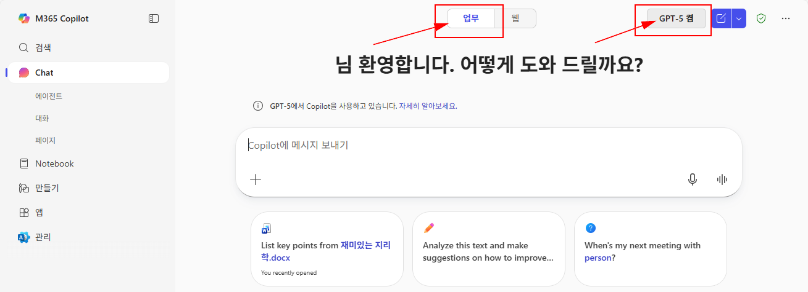
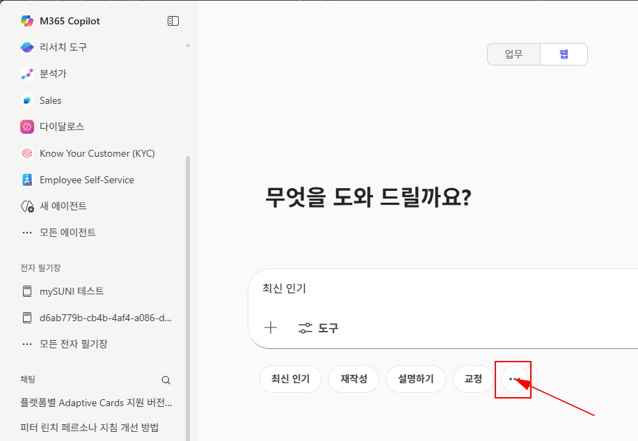
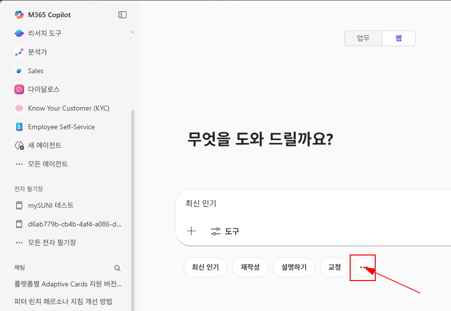

이번 스테이지에서는 우리 코파일럿의 강력한 슈퍼파워를 몸소 체험해 보고, 나만의 커스텀 프롬프트로 발전시켜 보겠습니다.
Tip ▶ 아시나요? 마이크로소프트에서 공지했던 추천 프롬프트가 있었다는 것을...

1️⃣ 첫번째 단계, 추천 프롬프트 체험해보기
-
코파일럿의 Work Chat에 접속합니다. https://m365.cloud.microsoft/chat/
 - 아래의 추천 프롬프트 6개를 복사하여 Work Chat에 하나씩 실행해봅니다. (Work Chat 에서 GPT-5를 활성화 한 상태로 진행하세요.)
- 각 프롬프트 실행 후, 코파일럿이 제공하는 답변을 확인하고, 나의 업무에 어떻게 도움이 되는지 생각해 봅니다.
🚩 ① 오늘의 최우선 과제 확인
오늘 내가 가장 먼저 처리해야 할 핵심 업무와 우선순위를 정리해 주세요. 중요도와 예상 소요 시간을 함께 제시해 주세요.
🚩 ② 내일 일정 충돌 해결
내일 캘린더에서 겹치는 일정들을 확인하고, 우선순위에 따라 조율하는 방법을 추천해 주세요. 필요하다면 대체 시간이나 참석 방식(온라인/오프라인)도 제안해 주세요.
🚩 ③ 다음 상호작용 준비
[사람]과의 다음 미팅을 준비하기 위해, 우리가 최근 함께 작업한 문서를 기반으로 상대방이 중요하게 생각할 5가지 주제를 정리해 주세요. 각 주제에 대한 간단한 설명도 추가해 주세요.
🚩 ④ 매니저가 지정한 작업 체크리스트
이번 주 이메일, Teams 채팅, 회의록에서 매니저가 나에게 지정한 모든 작업과 액션 아이템을 찾아, 마감일과 함께 체크리스트 형태로 정리해 주세요. 긴급도도 표시해 주세요.
🚩 ⑤ 전문가 동료 찾기
[주제]에 전문성을 가진 동료를 찾아 주세요. 각 동료의 현재 역할, 핵심 역량, 그리고 해당 주제와의 관련성을 요약하고, 협업 시 기대할 수 있는 기여도도 간단히 설명해 주세요.
🚩 ⑥ 고객 360도 개요 및 회의 준비
다가오는 고객 미팅을 위해 최근 이메일, 회의, 상태 보고서, 최신 회사 소식을 기반으로 고객의 360도 개요를 작성해 주세요. 회의에서 활용할 전략적 추천 사항과 반드시 물어볼 질문 5개도 함께 제안해 주세요.
2️⃣ 두번째 단계, 나만의 커스텀 프롬프트 만들기
- 위에서 체험한 추천 프롬프트를 참고하여, 나의 업무에 특화된 커스텀 프롬프트를 작성해 봅니다. 예를 들어, "이번 주 내 팀 미팅에서 다룰 주요 안건을 요약해줘"와 같은 구체적인 요청을 만들어 볼 수 있습니다.
- 작성한 커스텀 프롬프트를 Work Chat에 입력하고, 코파일럿이 제공하는 답변을 확인합니다.
- 코파일럿의 답변이 나의 기대에 부합하는지 평가하고, 필요하다면 프롬프트를 수정하여 재실행해 봅니다.
- 최종적으로 만족스러운 답변을 얻었다면, 해당 커스텀 프롬프트와 코파일럿의 답변을 스크린샷으로 저장해 둡니다.
Tip ▶ 아시나요? 잘 만든 프롬프트를 저장해 두고 나중에 불러내서 사용할 수 있다는 것을..

그리고 여기 이 버튼을 클릭해 보시면 저장된 프롬프트들을 사용할 수 있습니다.

또한, 프롬프트를 공유할 때는 아래와 같이 클릭하면 됩니다.

그리고 여기 이 버튼을 클릭해 보시면 저장된 프롬프트들을 사용할 수 있습니다.

또한, 프롬프트를 공유할 때는 아래와 같이 클릭하면 됩니다.
3️⃣ 세번째 단계, 나만의 커스텀 프롬프트 제출하기
이렇게 만들어진 나만의 커스텀 프롬프트를 아래의 링크를 통해 제출해 주세요. 추후 투표를 통해 선정되면 상품을 드립니다.